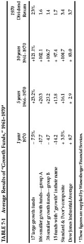
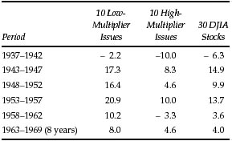
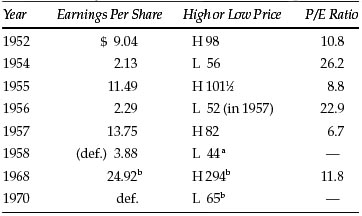
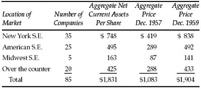

T he enterprising investor, by definition, will devote a fair amount of his attention and efforts toward obtaining a better than run-of-the-mill investment result. In our discussion of general investment policy we have made some suggestions regarding bond investments that are addressed chiefly to the enterprising investor. He might be interested in special opportunities of the following kinds:
References have been made to these unusual types of bond issues in Chapter 4. *
At the other end of the spectrum there may be lower-quality bonds obtainable at such low prices as to constitute true bargain opportunities. But these would belong in the “special situation” area, where no true distinction exists between bonds and common stocks. †
Operations in Common Stocks
The activities specially characteristic of the enterprising investor in the common-stock field may be classified under four heads:
General Market Policy—Formula Timing
We reserve for the next chapter our discussion of the possibilities and limitations of a policy of entering the market when it is depressed and selling out in the advanced stages of a boom. For many years in the past this bright idea appeared both simple and feasible, at least from first inspection of a market chart covering its periodic fluctuations. We have already admitted ruefully that the market’s action in the past 20 years has not lent itself to operations of this sort on any mathematical basis. The fluctuations that have taken place, while not inconsiderable in extent, would have required a special talent or “feel” for trading to take advantage of them. This is something quite different from the intelligence which we are assuming in our readers, and we must exclude operations based on such skill from our terms of reference.
The 50–50 plan, which we proposed to the defensive investor and described on p. 90, is about the best specific or automatic formula we can recommend to all investors under the conditions of 1972. But we have retained a broad leeway between the 25% minimum and the 75% maximum in common stocks, which we allow to those investors who have strong convictions about either the danger or the attractiveness of the general market level. Some 20 years ago it was possible to discuss in great detail a number of clear-cut formulas for varying the percentage held in common stocks, with confidence that these plans had practical utility. 1 The times seem to have passed such approaches by, and there would be little point in trying to determine new levels for buying and selling out of the market patterns since 1949. That is too short a period to furnish any reliable guide to the future. *
Growth-Stock Approach
Every investor would like to select the stocks of companies that will do better than the average over a period of years. A growth stock may be defined as one that has done this in the past and is expected to do so in the future. 2 Thus it seems only logical that the intelligent investor should concentrate upon the selection of growth stocks. Actually the matter is more complicated, as we shall try to show.
It is a mere statistical chore to identify companies that have “out-performed the averages” in the past. The investor can obtain a list of 50 or 100 such enterprises from his broker. † Why, then, should he not merely pick out the 15 or 20 most likely looking issues of this group and lo! he has a guaranteed-successful stock portfolio?
There are two catches to this simple idea. The first is that common stocks with good records and apparently good prospects sell at correspondingly high prices. The investor may be right in his judgment of their prospects and still not fare particularly well, merely because he has paid in full (and perhaps overpaid) for the expected prosperity. The second is that his judgment as to the future may prove wrong. Unusually rapid growth cannot keep up forever; when a company has already registered a brilliant expansion, its very increase in size makes a repetition of its achievement more difficult. At some point the growth curve flattens out, and in many cases it turns downward.
It is obvious that if one confines himself to a few chosen instances, based on hindsight, he could demonstrate that fortunes can readily be either made or lost in the growth-stock field. How can one judge fairly of the overall results obtainable here? We think that reasonably sound conclusions can be drawn from a study of the results achieved by the investment funds specializing in the growth-stock approach. The authoritative manual entitled Investment Companies, published annually by Arthur Wiesenberger & Company, members of the New York Stock Exchange, computes the annual performance of some 120 such “growth funds” over a period of years. Of these, 45 have records covering ten years or more. The average overall gain for these companies—unweighted for size of fund—works out at 108% for the decade 1961–1970, compared with 105% for the S & P composite and 83% for the DJIA. 2 Thus it seems only logical that the intelligent investor should concentrate upon the selection of growth stocks. Actually the matter is more complicated, as we shall try to show.
It is a mere statistical chore to identify companies that have “out-performed the averages” in the past. The investor can obtain a list of 50 or 100 such enterprises from his broker. † Why, then, should he not merely pick out the 15 or 20 most likely looking issues of this group and lo! he has a guaranteed-successful stock portfolio?
There are two catches to this simple idea. The first is that common stocks with good records and apparently good prospects sell at correspondingly high prices. The investor may be right in his judgment of their prospects and still not fare particularly well, merely because he has paid in full (and perhaps overpaid) for the expected prosperity. The second is that his judgment as to the future may prove wrong. Unusually rapid growth cannot keep up forever; when a company has already registered a brilliant expansion, its very increase in size makes a repetition of its achievement more difficult. At some point the growth curve flattens out, and in many cases it turns downward.
It is obvious that if one confines himself to a few chosen instances, based on hindsight, he could demonstrate that fortunes can readily be either made or lost in the growth-stock field. How can one judge fairly of the overall results obtainable here? We think that reasonably sound conclusions can be drawn from a study of the results achieved by the investment funds specializing in the growth-stock approach. The authoritative manual entitled Investment Companies, published annually by Arthur Wiesenberger & Company, members of the New York Stock Exchange, computes the annual performance of some 120 such “growth funds” over a period of years. Of these, 45 have records covering ten years or more. The average overall gain for these companies—unweighted for size of fund—works out at 108% for the decade 1961–1970, compared with 105% for the S & P composite and 83% for the DJIA. 3 In the two years 1969 and 1970 the majority of the 126 “growth funds” did worse than either index. Similar results were found in our earlier studies. The implication here is that no outstanding rewards came from diversified investment in growth companies as compared with that in common stocks generally. *
There is no reason at all for thinking that the average intelligent investor, even with much devoted effort, can derive better results over the years from the purchase of growth stocks than the investment companies specializing in this area. Surely these organizations have more brains and better research facilities at their disposal than you do. Consequently we should advise against the usual type of growth-stock commitment for the enterprising investor. * This is one in which the excellent prospects are fully recognized in the market and already reflected in a current price-earnings ratio of, say, higher than 20. (For the defensive investor we suggested an upper limit of purchase price at 25 times average earnings of the past seven years. The two criteria would be about equivalent in most cases.) †
The striking thing about growth stocks as a class is their tendency toward wide swings in market price. This is true of the largest and longest-established companies—such as General Electric and International Business Machines—and even more so of newer and smaller successful companies. They illustrate our thesis that the main characteristic of the stock market since 1949 has been the injection of a highly speculative element into the shares of companies which have scored the most brilliant successes, and which themselves would be entitled to a high investment rating. (Their credit standing is of the best, and they pay the lowest interest rates on their borrowings.) The investment caliber of such a company may not change over a long span of years, but the risk characteristics of its stock will depend on what happens to it in the stock market. The more enthusiastic the public grows about it, and the faster its advance as compared with the actual growth in its earnings, the riskier a proposition it becomes. *
But is it not true, the reader may ask, that the really big fortunes from common stocks have been garnered by those who made a substantial commitment in the early years of a company in whose future they had great confidence, and who held their original shares unwaveringly while they increased 100-fold or more in value? The answer is “Yes.” But the big fortunes from single-company investments are almost always realized by persons who have a close relationship with the particular company—through employment, family connection, etc.—which justifies them in placing a large part of their resources in one medium and holding on to this commitment through all vicissitudes, despite numerous temptations to sell out at apparently high prices along the way. An investor without such close personal contact will constantly be faced with the question of whether too large a portion of his funds are in this one medium. * Each decline—however temporary it proves in the sequel—will accentuate his problem; and internal and external pressures are likely to force him to take what seems to be a goodly profit, but one far less than the ultimate bonanza. 4

Three Recommended Fields for “Enterprising Investment”
To obtain better than average investment results over a long pull requires a policy of selection or operation possessing a twofold merit: (1) It must meet objective or rational tests of underlying soundness; and (2) it must be different from the policy followed by most investors or speculators. Our experience and study leads us to recommend three investment approaches that meet these criteria. They differ rather widely from one another, and each may require a different type of knowledge and temperament on the part of those who assay it.
The Relatively Unpopular Large Company
If we assume that it is the habit of the market to overvalue common stocks which have been showing excellent growth or are glamorous for some other reason, it is logical to expect that it will undervalue—relatively, at least—companies that are out of favor because of unsatisfactory developments of a temporary nature. This may be set down as a fundamental law of the stock market, and it suggests an investment approach that should prove both conservative and promising.
The key requirement here is that the enterprising investor concentrate on the larger companies that are going through a period of unpopularity. While small companies may also be undervalued for similar reasons, and in many cases may later increase their earnings and share price, they entail the risk of a definitive loss of profitability and also of protracted neglect by the market in spite of better earnings. The large companies thus have a double advantage over the others. First, they have the resources in capital and brain power to carry them through adversity and back to a satisfactory earnings base. Second, the market is likely to respond with reasonable speed to any improvement shown.
A remarkable demonstration of the soundness of this thesis is found in studies of the price behavior of the unpopular issues in the Dow Jones Industrial Average. In these it was assumed that an investment was made each year in either the six or the ten issues in the DJIA which were selling at the lowest multipliers of their current or previous year’s earnings. These could be called the “cheapest” stocks in the list, and their cheapness was evidently the reflection of relative unpopularity with investors or traders. It was assumed further that these purchases were sold out at the end of holding periods ranging from one to five years. The results of these investments were then compared with the results shown in either the DJIA as a whole or in the highest multiplier (i.e., the most popular) group.
The detailed material we have available covers the results of annual purchases assumed in each of the past 53 years. 5 In the early period, 1917–1933, this approach proved unprofitable. But since 1933 the method has shown highly successful results. In 34 tests made by Drexel & Company (now Drexel Firestone) * of one-year holding—from 1937 through 1969—the cheap stocks did definitely worse than the DJIA in only three instances; the results were about the same in six cases; and the cheap stocks clearly outperformed the average in 25 years. The consistently better performance of the low-multiplier stocks is shown (Table 7-2) by the average results for successive five-year periods, when compared with those of the DJIA and of the ten high-multipliers.
TABLE 7-2 Average Annual Percentage Gain or Loss on Test Issues, 1937–1969

The Drexel computation shows further that an original investment of $10,000 made in the low-multiplier issues in 1936, and switched each year in accordance with the principle, would have grown to $66,900 by 1962. The same operations in high-multiplier stocks would have ended with a value of only $25,300; while an operation in all thirty stocks would have increased the original fund to $44,000. †
The concept of buying “unpopular large companies” and its execution on a group basis, as described above, are both quite simple. But in considering individual companies a special factor of opposite import must sometimes to be taken into account. Companies that are inherently speculative because of widely varying earnings tend to sell both at a relatively high price and at a relatively low multiplier in their good years, and conversely at low prices and high multipliers in their bad years. These relationships are illustrated in Table 7-3, covering fluctuations of Chrysler Corp. common. In these cases the market has sufficient skepticism as to the continuation of the unusually high profits to value them conservatively, and conversely when earnings are low or nonexistent. (Note that, by the arithmetic, if a company earns “next to nothing” its shares must sell at a high multiplier of these minuscule profits.)
As it happens Chrysler has been quite exceptional in the DJIA list of leading companies, and hence it did not greatly affect the the low-multiplier calculations. It would be quite easy to avoid inclusion of such anomalous issues in a low-multiplier list by requiring also that the price be low in relation to past average earnings or by some similar test.
While writing this revision we tested the results of the DJIA-low-multiplier method applied to a group assumed to be bought at the end of 1968 and revalued on June 30, 1971. This time the figures proved quite disappointing, showing a sharp loss for the low-multiplier six or ten and a good profit for the high-multiplier selections. This one bad instance should not vitiate conclusions based on 30-odd experiments, but its recent happening gives it a special adverse weight. Perhaps the aggressive investor should start with the “low-multiplier” idea, but add other quantitative and qualitative requirements thereto in making up his portfolio.
TABLE 7-3 Chrysler Common Prices and Earnings, 1952–1970

Purchase of Bargain Issues
We define a bargain issue as one which, on the basis of facts established by analysis, appears to be worth considerably more than it is selling for. The genus includes bonds and preferred stocks selling well under par, as well as common stocks. To be as concrete as possible, let us suggest that an issue is not a true “bargain” unless the indicated value is at least 50% more than the price. What kind of facts would warrant the conclusion that so great a discrepancy exists? How do bargains come into existence, and how does the investor profit from them?
There are two tests by which a bargain common stock is detected. The first is by the method of appraisal. This relies largely on estimating future earnings and then multiplying these by a factor appropriate to the particular issue. If the resultant value is sufficiently above the market price—and if the investor has confidence in the technique employed—he can tag the stock as a bargain. The second test is the value of the business to a private owner. This value also is often determined chiefly by expected future earnings—in which case the result may be identical with the first. But in the second test more attention is likely to be paid to the realizable value of the assets, with particular emphasis on the net current assets or working capital.
At low points in the general market a large proportion of common stocks are bargain issues, as measured by these standards. (A typical example was General Motors when it sold at less than 30 in 1941, equivalent to only 5 for the 1971 shares. It had been earning in excess of $4 and paying $3.50, or more, in dividends.) It is true that current earnings and the immediate prospects may both be poor, but a levelheaded appraisal of average future conditions would indicate values far above ruling prices. Thus the wisdom of having courage in depressed markets is vindicated not only by the voice of experience but also by application of plausible techniques of value analysis.
The same vagaries of the market place that recurrently establish a bargain condition in the general list account for the existence of many individual bargains at almost all market levels. The market is fond of making mountains out of molehills and exaggerating ordinary vicissitudes into major setbacks. * Even a mere lack of interest or enthusiasm may impel a price decline to absurdly low levels. Thus we have what appear to be two major sources of undervaluation: (1) currently disappointing results and (2) protracted neglect or unpopularity.
However, neither of these causes, if considered by itself alone, can be relied on as a guide to successful common-stock investment. How can we be sure that the currently disappointing results are indeed going to be only temporary? True, we can supply excellent examples of that happening. The steel stocks used to be famous for their cyclical quality, and the shrewd buyer could acquire them at low prices when earnings were low and sell them out in boom years at a fine profit. A spectacular example is supplied by Chrysler Corporation, as shown by the data in Table 7-3.
If this were the standard behavior of stocks with fluctuating earnings, then making profits in the stock market would be an easy matter. Unfortunately, we could cite many examples of declines in earnings and price which were not followed automatically by a handsome recovery of both. One such was Anaconda Wire and Cable, which had large earnings up to 1956, with a high price of 85 in that year. The earnings then declined irregularly for six years; the price fell to 23½ in 1962, and the following year it was taken over by its parent enterprise (Anaconda Corporation) at the equivalent of only 33.
The many experiences of this type suggest that the investor would need more than a mere falling off in both earnings and price to give him a sound basis for purchase. He should require an indication of at least reasonable stability of earnings over the past decade or more—i.e., no year of earnings deficit—plus sufficient size and financial strength to meet possible setbacks in the future. The ideal combination here is thus that of a large and prominent company selling both well below its past average price and its past average price/earnings multiplier. This would no doubt have ruled out most of the profitable opportunities in companies such as Chrysler, since their low-price years are generally accompanied by high price/earnings ratios. But let us assure the reader now—and no doubt we shall do it again—that there is a world of difference between “hindsight profits” and “real-money profits.” We doubt seriously whether the Chrysler type of roller coaster is a suitable medium for operations by our enterprising investor.
We have mentioned protracted neglect or unpopularity as a second cause of price declines to unduly low levels. A current case of this kind would appear to be National Presto Industries. In the bull market of 1968 it sold at a high of 45, which was only 8 times the $5.61 earnings for that year. The per-share profits increased in both 1969 and 1970, but the price declined to only 21 in 1970. This was less than 4 times the (record) earnings in that year and less than its net-current-asset value. In March 1972 it was selling at 34, still only 5½ times the last reported earnings, and at about its enlarged net-current-asset value.
Another example of this type is provided currently by Standard Oil of California, a concern of major importance. In early 1972 it was selling at about the same price as 13 years before, say 56. Its earnings had been remarkably steady, with relatively small growth but with only one small decline over the entire period. Its book value was about equal to the market price. With this conservatively favorable 1958–71 record the company has never shown an average annual price as high as 15 times its current earnings. In early 1972 the price/earnings ratio was only about 10.
A third cause for an unduly low price for a common stock may be the market’s failure to recognize its true earnings picture. Our classic example here is Northern Pacific Railway which in 1946–47 declined from 36 to 13½. The true earnings of the road in 1947 were close to $10 per share. The price of the stock was held down in great part by its $1 dividend. It was neglected also because much of its earnings power was concealed by accounting methods peculiar to railroads.
The type of bargain issue that can be most readily identified is a common stock that sells for less than the company’s net working capital alone, after deducting all prior obligations. * This would mean that the buyer would pay nothing at all for the fixed assets—buildings, machinery, etc., or any good-will items that might exist. Very few companies turn out to have an ultimate value less than the working capital alone, although scattered instances may be found. The surprising thing, rather, is that there have been so many enterprises obtainable which have been valued in the market on this bargain basis. A compilation made in 1957, when the market’s level was by no means low, disclosed about 150 of such common stocks. In Table 7-4 we summarize the result of buying, on December 31, 1957, one share of each of the 85 companies in that list for which data appeared in Standard & Poor’s Monthly Stock Guide, and holding them for two years.
By something of a coincidence, each of the groups advanced in the two years to somewhere in the neighborhood of the aggregate net-current-asset value. The gain for the entire “portfolio” in that period was 75%, against 50% for Standard & Poor’s 425 industrials. What is more remarkable is that none of the issues showed significant losses, seven held about even, and 78 showed appreciable gains.
Our experience with this type of investment selection—on a diversified basis—was uniformly good for many years prior to 1957. It can probably be affirmed without hesitation that it constitutes a safe and profitable method of determining and taking advantage of undervalued situations. However, during the general market advance after 1957 the number of such opportunities became extremely limited, and many of those available were showing small operating profits or even losses. The market decline of 1969–70 produced a new crop of these “sub-working-capital” stocks. We discuss this group in Chapter 15, on stock selection for the enterprising investor.
TABLE 7-4 Profit Experience of Undervalued Stocks, 1957–1959

BARGAIN -ISSUE PATTERN IN SECONDARY COMPANIES. We have defined a secondary company as one that is not a leader in a fairly important industry. Thus it is usually one of the smaller concerns in its field, but it may equally well be the chief unit in an unimportant line. By way of exception, any company that has established itself as a growth stock is not ordinarily considered “secondary.”
In the great bull market of the 1920s relatively little distinction was drawn between industry leaders and other listed issues, provided the latter were of respectable size. The public felt that a middle-sized company was strong enough to weather storms and that it had a better chance for really spectacular expansion than one that was already of major dimensions. The depression years 1931–32, however, had a particularly devastating impact on the companies below the first rank either in size or in inherent stability. As a result of that experience investors have since developed a pronounced preference for industry leaders and a corresponding lack of interest most of the time in the ordinary company of secondary importance. This has meant that the latter group have usually sold at much lower prices in relation to earnings and assets than have the former. It has meant further that in many instances the price has fallen so low as to establish the issue in the bargain class.
When investors rejected the stocks of secondary companies, even though these sold at relatively low prices, they were expressing a belief or fear that such companies faced a dismal future. In fact, at least subconsciously, they calculated that any price was too high for them because they were heading for extinction—just as in 1929 the companion theory for the “blue chips” was that no price was too high for them because their future possibilities were limitless. Both of these views were exaggerations and were productive of serious investment errors. Actually, the typical middle-sized listed company is a large one when compared with the average privately owned business. There is no sound reason why such companies should not continue indefinitely in operation, undergoing the vicissitudes characteristic of our economy but earning on the whole a fair return on their invested capital.
This brief review indicates that the stock market’s attitude toward secondary companies tends to be unrealistic and consequently to create in normal times innumerable instances of major undervaluation. As it happens, the World War II period and the postwar boom were more beneficial to the smaller concerns than to the larger ones, because then the normal competition for sales was suspended and the former could expand sales and profit margins more spectacularly. Thus by 1946 the market’s pattern had completely reversed itself from that before the war. Whereas the leading stocks in the Dow Jones Industrial Average had advanced only 40% from the end of 1938 to the 1946 high, Standard & Poor’s index of low-priced stocks had shot up no less than 280% in the same period. Speculators and many self-styled investors—with the proverbial short memories of people in the stock market—were eager to buy both old and new issues of unimportant companies at inflated levels. Thus the pendulum had swung clear to the opposite extreme. The very class of secondary issues that had formerly supplied by far the largest proportion of bargain opportunities was now presenting the greatest number of examples of overenthusiasm and overvaluation. In a different way this phenomenon was repeated in 1961 and 1968—the emphasis now being placed on new offerings of the shares of small companies of less than secondary character, and on nearly all companies in certain favored fields such as “electronics,” “computers,” “franchise” concerns, and others. *
As was to be expected the ensuing market declines fell most heavily on these overvaluations. In some cases the pendulum swing may have gone as far as definite under valuation.
If most secondary issues tend normally to be undervalued, what reason has the investor to believe that he can profit from such a situation? For if it persists indefinitely, will he not always be in the same market position as when he bought the issue? The answer here is somewhat complicated. Substantial profits from the purchase of secondary companies at bargain prices arise in a variety of ways. First, the dividend return is relatively high. Second, the reinvested earnings are substantial in relation to the price paid and will ultimately affect the price. In a five-to seven-year period these advantages can bulk quite large in a well-selected list. Third, a bull market is ordinarily most generous to low-priced issues; thus it tends to raise the typical bargain issue to at least a reasonable level. Fourth, even during relatively featureless market periods a continuous process of price adjustment goes on, under which secondary issues that were undervalued may rise at least to the normal level for their type of security. Fifth, the specific factors that in many cases made for a disappointing record of earnings may be corrected by the advent of new conditions, or the adoption of new policies, or by a change in management.
An important new factor in recent years has been the acquisition of smaller companies by larger ones, usually as part of a diversification program. In these cases the consideration paid has almost always been relatively generous, and much in excess of the bargain levels existing not long before.
When interest rates were much lower than in 1970, the field of bargain issues extended to bonds and preferred stocks that sold at large discounts from the amount of their claim. Currently we have a different situation in which even well-secured issues sell at large discounts if carrying coupon rates of, say, 4½% or less. Example: American Telephone & Telegraph 2 5/8s, due 1986, sold as low as 51 in 1970; Deere & Co. 4½s, due 1983, sold as low as 62. These may well turn out to have been bargain opportunities before very long—if ruling interest rates should decline substantially. For a bargain bond issue in the more traditional sense perhaps we shall have to turn once more to the first-mortgage bonds of railroads now in financial difficulties, which sell in the 20s or 30s. Such situations are not for the inexpert investor; lacking a real sense of values in this area, he may burn his fingers. But there is an underlying tendency for market decline in this field to be overdone; consequently the group as a whole offers an especially rewarding invitation to careful and courageous analysis. In the decade ending in 1948 the billion-dollar group of defaulted railroad bonds presented numerous and spectacular opportunities in this area. Such opportunities have been quite scarce since then; but they seem likely to return in the 1970s. *
Special Situations, or “Workouts”
Not so long ago this was a field which could almost guarantee an attractive rate of return to those who knew their way around in it; and this was true under almost any sort of general market situation. It was not actually forbidden territory to members of the general public. Some who had a flair for this sort of thing could learn the ropes and become pretty capable practitioners without the necessity of long academic study or apprenticeship. Others have been keen enough to recognize the underlying soundness of this approach and to attach themselves to bright young men who handled funds devoted chiefly to these “special situations.” But in recent years, for reasons we shall develop later, the field of “arbitrages and workouts” became riskier and less profitable. It may be that in years to come conditions in this field will become more propitious. In any case it is worthwhile outlining the general nature and origin of these operations, with one or two illustrative examples.
The typical “special situation” has grown out of the increasing number of acquisitions of smaller firms by large ones, as the gospel of diversification of products has been adopted by more and more managements. It often appears good business for such an enterprise to acquire an existing company in the field it wishes to enter rather than to start a new venture from scratch. In order to make such acquisition possible, and to obtain acceptance of the deal by the required large majority of shareholders of the smaller company, it is almost always necessary to offer a price considerably above the current level. Such corporate moves have been producing interesting profit-making opportunities for those who have made a study of this field, and have good judgment fortified by ample experience.
A great deal of money was made by shrewd investors not so many years ago through the purchase of bonds of railroads in bankruptcy—bonds which they knew would be worth much more than their cost when the railroads were finally reorganized. After promulgation of the plans of reorganization a “when issued” market for the new securities appeared. These could almost always be sold for considerably more than the cost of the old issues which were to be exchanged therefor. There were risks of nonconsummation of the plans or of unexpected delays, but on the whole such “arbitrage operations” proved highly profitable.
There were similar opportunities growing out of the breakup of public-utility holding companies pursuant to 1935 legislation. Nearly all these enterprises proved to be worth considerably more when changed from holding companies to a group of separate operating companies.
The underlying factor here is the tendency of the security markets to undervalue issues that are involved in any sort of complicated legal proceedings. An old Wall Street motto has been: “Never buy into a lawsuit.” This may be sound advice to the speculator seeking quick action on his holdings. But the adoption of this attitude by the general public is bound to create bargain opportunities in the securities affected by it, since the prejudice against them holds their prices down to unduly low levels. *
The exploitation of special situations is a technical branch of investment which requires a somewhat unusual mentality and equipment. Probably only a small percentage of our enterprising investors are likely to engage in it, and this book is not the appropriate medium for expounding its complications. 6
Broader Implications of Our Rules for Investment
Investment policy, as it has been developed here, depends in the first place on a choice by the investor of either the defensive (passive) or aggressive (enterprising) role. The aggressive investor must have a considerable knowledge of security values—enough, in fact, to warrant viewing his security operations as equivalent to a business enterprise. There is no room in this philosophy for a middle ground, or a series of gradations, between the passive and aggressive status. Many, perhaps most, investors seek to place themselves in such an intermediate category; in our opinion that is a compromise that is more likely to produce disappointment than achievement.
As an investor you cannot soundly become “half a businessman,” expecting thereby to achieve half the normal rate of business profits on your funds.
It follows from this reasoning that the majority of security owners should elect the defensive classification. They do not have the time, or the determination, or the mental equipment to embark upon investing as a quasi-business. They should therefore be satisfied with the excellent return now obtainable from a defensive portfolio (and with even less), and they should stoutly resist the recurrent temptation to increase this return by deviating into other paths.
The enterprising investor may properly embark upon any security operation for which his training and judgment are adequate and which appears sufficiently promising when measured by established business standards.
In our recommendations and caveats for this group of investors we have attempted to apply such business standards. In those for the defensive investor we have been guided largely by the three requirements of underlying safety, simplicity of choice, and promise of satisfactory results, in terms of psychology as well as arithmetic. The use of these criteria has led us to exclude from the field of recommended investment a number of security classes that are normally regarded as suitable for various kinds of investors. These prohibitions were listed in our first chapter on p. 30.
Let us consider a little more fully than before what is implied in these exclusions. We have advised against the purchase at “full prices” of three important categories of securities: (1) foreign bonds, (2) ordinary preferred stocks, and (3) secondary common stocks, including, of course, original offerings of such issues. By “full prices” we mean prices close to par for bonds or preferred stocks, and prices that represent about the fair business value of the enterprise in the case of common stocks. The greater number of defensive investors are to avoid these categories regardless of price; the enterprising investor is to buy them only when obtainable at bargain prices—which we define as prices not more than two-thirds of the appraisal value of the securities.
What would happen if all investors were guided by our advice in these matters? That question was considered in regard to foreign bonds, on p. 138, and we have nothing to add at this point. Investment-grade preferred stocks would be bought solely by corporations, such as insurance companies, which would benefit from the special income-tax status of stock issues owned by them.
The most troublesome consequence of our policy of exclusion is in the field of secondary common stocks. If the majority of investors, being in the defensive class, are not to buy them at all, the field of possible buyers becomes seriously restricted. Furthermore, if aggressive investors are to buy them only at bargain levels, then these issues would be doomed to sell for less than their fair value, except to the extent that they were purchased unintelligently.
This may sound severe and even vaguely unethical. Yet in truth we are merely recognizing what has actually happened in this area for the greater part of the past 40 years. Secondary issues, for the most part, do fluctuate about a central level which is well below their fair value. They reach and even surpass that value at times; but this occurs in the upper reaches of bull markets, when the lessons of practical experience would argue against the soundness of paying the prevailing prices for common stocks.
Thus we are suggesting only that the aggressive investor recognize the facts of life as it is lived by secondary issues and that they accept the central market levels that are normal for that class as their guide in fixing their own levels for purchase.
There is a paradox here, nevertheless. The average well-selected secondary company may be fully as promising as the average industrial leader. What the smaller concern lacks in inherent stability it may readily make up in superior possibilities of growth. Consequently it may appear illogical to many readers to term “unintelligent” the purchase of such secondary issues at their full “enterprise value.” We think that the strongest logic is that of experience. Financial history says clearly that the investor may expect satisfactory results, on the average, from secondary common stocks only if he buys them for less than their value to a private owner, that is, on a bargain basis.
The last sentence indicates that this principle relates to the ordinary outside investor. Anyone who can control a secondary company, or who is part of a cohesive group with such control, is fully justified in buying the shares on the same basis as if he were investing in a “close corporation” or other private business. The distinction between the position, and consequent investment policy, of insiders and of outsiders becomes more important as the enterprise itself becomes less important. It is a basic characteristic of a primary or leading company that a single detached share is ordinarily worth as much as a share in a controlling block. In secondary companies the average market value of a detached share is substantially less than its worth to a controlling owner. Because of this fact, the matter of shareholder-management relations and of those between inside and outside shareholders tends to be much more important and controversial in the case of secondary than in that of primary companies.
At the end of Chapter 5 we commented on the difficulty of making any hard and fast distinction between primary and secondary companies. The many common stocks in the boundary area may properly exhibit an intermediate price behavior. It would not be illogical for an investor to buy such an issue at a small discount from its indicated or appraisal value, on the theory that it is only a small distance away from a primary classification and that it may acquire such a rating unqualifiedly in the not too distant future.
Thus the distinction between primary and secondary issues need not be made too precise; for, if it were, then a small difference in quality must produce a large differential in justified purchase price. In saying this we are admitting a middle ground in the classification of common stocks, although we counseled against such a middle ground in the classification of investors. Our reason for this apparent inconsistency is as follows: No great harm comes from some uncertainty of viewpoint regarding a single security, because such cases are exceptional and not a great deal is at stake in the matter. But the investor’s choice as between the defensive or the aggressive status is of major consequence to him, and he should not allow himself to be confused or compromised in this basic decision.